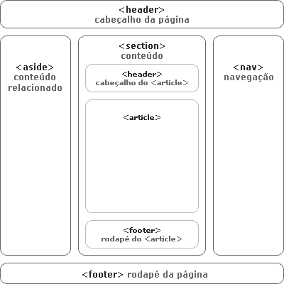
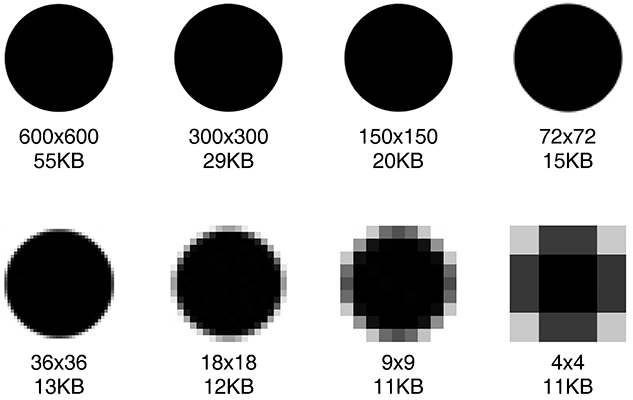
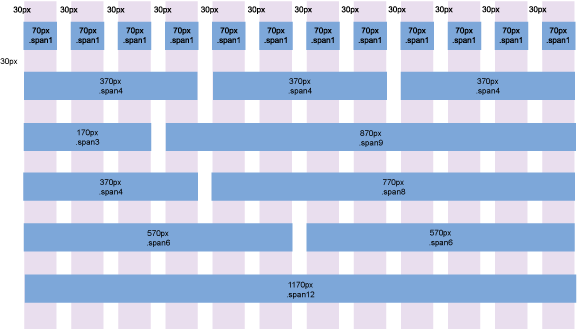
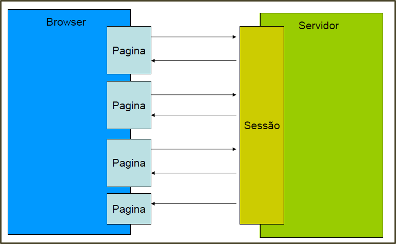
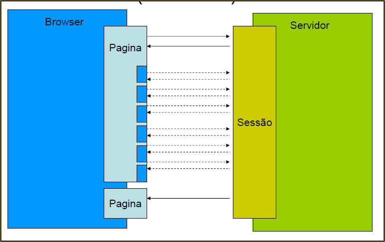

Curso Web Xp
Uma rápida abordagem aos principais recursos para o desenvolvimento web
Parte 1
Agenda
Vamos listar a agenda para o curso!
Dia 01 - 02/04/2015
- Introdução
- Processo de Desenvolvimento
- Configuração do Ambiente
- HTML 5
- XHTML o que realmente fica?
- Url's Amigáveis
- CSS3
- Vetores
- Tipografia
- Imagens
- Design em Colunas
- Conteúdos Adaptáveis
- Meta Tags
- Google Analytics
- Mão na Massa!
- Vamos Conversar?
Dia 02 - 09/04/2015
- Tableless
- JavaScript
- JQuery
- Objetos Literais
- PHP
- PHP Orientado a Objetos
Dia 03 - 10/04/2015
- Ajax
- Acesso à Banco de Dados
- Composer
- Bootstrap
- Envio de E-mails com Mandrill
- JSON
- CUrl
- Dicas de Plugins e Etc...
Introdução
HTML5 - A Evolução
Como tudo evoluiu?
Internet
- Constante evolução
- intagram
- youtube
- Como trabalhar, interagir ou se relacionar sem estes serviços?
O Problema
A internet que acessamos hoje, nativamente, não apresenta os recursos necessários para suprir as demandas
- Internet baseada em padrões definidos a mais de 20 anos
- Problemas?
- Falta de Padronização
- Falta de Especificação
- Difícil Manutenção
- Como se Trablhar de Forma Colaborativa?
World Wide Web Consortium (W3C)
- Grupo que ministra as métricas a serem seguidas pelas aplicações web
- Especificou detalhadamente toda a web que utilizamos hoje (HTML 4.01 / XHTML 1.0);
- Problema? Navegadores PROPRIETÁRIOS insistem em não implementar o PADRÃO.
- A Internet chegou em um nível de evolução altíssimo
- não é viável continuarmos a montar esse Frankstein
- Plugins fazem o que deveria ser nativo
- Flash
- Silverlight
- Javafx
Histórico
- 1995 - Netscape lanca o JavaScript e o DOM
- 1998 - Microsoft implementa função que daria vida ao Ajax (XMLHTTP)
- 2002 - Mozilla padroniza e aprimora esta função, batizando-a de XMLHttpRequest
- 2004 - Visibilidade Global do Ajax evidenciada pelo Google
- 2005 - Google Maps, uma aplicação web com características Desktop
A Saga do HTML
- Em 1999 ocorre o lançamento do HTML 4.01
- Grande parte Internet que acessamos hoje está escrita em HTML 4.01 ou XHTML 1.0
- W3C tenta lançar o XHTML 2.0 sem sucesso, motivo? revolução e não evolução!
- Em 2004, representantes das empresas Mozilla, Apple e Opera se reúnem para criar um grupo paralelo a W3C
- The Web Hypertext Application Technology Working Group (WHAT-WG)
- WHAT-WG propõe a criação HTML5, garantindo a compativilidade com o que já estava sendo usado
Processo de Desenvolvimento
- Benchmarking
- Comparação dos produtos, serviços e práticas empresariais (concorrentes ou não)
- Planejamento
- Número de horas investidas em um projeto.
- Criação da Estrutura do Site
- Coletar o briefing com o cliente
- logomarcas, imagens, textos, informações de contato e etc.
- O Projeto
- Criação dos
wireframes - Design Conceitural
- Interface
- Engenharia de Requisitos
- Modelagem do Sistema e do Banco de Dados
- Implementação
- Testes
- Entrega
- Treinamento
- Divulgação
Configuração do Ambiente
Antes de começar!
- Ambiente de Desenvolvimento vs Produção
- HardMode LAMP
- EasyMode XAMPP
- Muitas Vezes, desenvolver para web também envolver configurar o ambiente
- Entender a estrutura de configuração do servidor web
- Habilitar/desabilitar módulos e/ou linguagens
- Criar Hosts Virtuais
- Autorização de Diretórios por Senha
- Utilização de Roteamentos de URL
Onde entra o HTML5?
Objetivo do HTML5: Encapsular os recursos que a Internet pode oferecer em um só lugar!
Usaremos então somente HTML5?
- Apesar de boa compatibilidade com a maioria dos navegadores atuais, alguns recursos podem limitar a experiência em determinados navegadores
- Solução? Criar alternativa de visualização do mesmo recurso.
HTML 5
Recursos
- Organização e Simplificação de Código
- Acesso Nativo a Áudio e Vídeo
- Possibilidade de interação CANVAS (desenho) no próprio documento HTML
- Possibilidade de Estilos Diferenciados e Modernos
- Marcação Semântica mais Significativa
HTML 5
Novos Elementos
<header>- cabeçalho da página ou de uma seção (não confundir com a tag<head>)<section>- cada seção do conteúdo<article>- um item do conteúdo dentro da página ou da seção<footer>- o rodapé da página ou de uma seção<nav>- o conjunto de links que formam a navegação, seja o menu principal do site ou links relacionados ao conteúdo da página<aside>- conteúdo relacionado ao artigo (como arquivos e posts relacionados em um blog, por exemplo)
Exemplo
Outras Tags
<figure>- usado para associar uma legenda a uma imagem, vídeo, arquivo de áudio, objeto ou iframe
<figure id="figura01">
<legend>Figura 1. Esquema de uma página em HTML5</legend>
<img src="html5.png" border="0" width="200" height="300"
alt="Alt Desc" />
</figure>
<canvas> - por meio de uma API gráfica, renderiza imagens 2D dinâmicas que poderão ser usadas em jogos, gráficos, etc;<audio> e <video> - usados para streaming (transmissão pela internet) de áudio e vídeo. É uma tentativa de criar um padrão em todos os navegadores como acontece hoje com as imagens
<audio src="musica.mp3" autoplay="autoplay" loop="20000"></audio>
<video src="video.mov" width="400" height="360"></video>
<dialog>- junto com as tags<dt>e<dd>criado para formatar um diálogo:
<dialog>
<dt>Michael, you never told me your family knew Johnny Fontane!</dt>
<dd>Oh sure, you want to meet him?</dd>
<dt>Yeah!</dt>
</dialog>
<time> - representa data e/ou hora<meter> - utilizado para representar medidas, que podem ser de distância, de armazenagem em disco, etc.HTML5
Estrutura Básica
<!DOCTYPE html>
<html>
<head>
<meta charset="UTF-8">
<title>Title of the document</title>
</head>
<body>
<header>
<nav></nav>
</header>
<aside></aside>
<section>
<header></header>
<article></article>
<article></article>
<article></article>
<footer></footer>
</section>
<footer></footer>
</body>
</html>
XHTML o que realmente fica?
- XHTML (EXtensible HyperText Markup Language)
- As tags e atributos foram criadas com base nas do HTML 4.01 e suas regras
- XHTML 1.0 é uma recomendação da W3C e sua versão atual data de 26 de janeiro de 2000.
- Regras (herdadas pelo HTML5)
- Fechar todas as tags
- Todas as tags devem ser escritas em letras minúsculas
- Todos os atributos XHTML devem conter "ASPAS".
- Morre o atributo name
- Atributos sem valor foram descontinuados
- Todos os elementos XHTML devem estar corretamente aninhados dentro do elemento raiz
Ainda são úteis!
<p></p>
<div></div>
<h1></h1>
<pre></pre>
<code></code>
<em></em>
<span></span>
<strong></strong>
<ul></ul>
<ol></ol>
<li></li>
<dl></dl>
<dt></dt>
<dd></dd>
<table></table>
<img></img>
<form></form>
<input/>
<textarea/>
Não devemos mais usar!
<acronym></acronym>
<applet></applet>
<basefont></basefont>
<big></big>
<center></center>
<dir></dir>
<font></font>
<frame></frame>
<frameset></frameset>
<noframes></noframes>
<strike></strike>
<tt></tt>
URL's Amigáveis
- Amigáveis tanto para visitantes quanto para sistemas de busca
- Regras que permitem a utilização de uma palavra chave que aponta página específica
- O que são? (No caso do Apache)
- São arquivos de acesso e configuração do Apache
- Lidos pelo Apache toda vez que você tenta acessar um arquivo que esta dentro de uma pasta onde exista um arquivo .htaccess.
- Nesse arquivo podemos criar regras de bloqueio de acesso, redirecionamentos e reescritas de URL.
- Ao invés de acessar
http://www.meusite.com.br/contato.php
http://www.meusite.com.br/contato
Como fazer?
- Frameworks de desenvolvimento apresentam arquivos de roteamento
- Forma simples? Utilizando Apache?
RewriteEngine On
RewriteRule ^contato/?$ /contato.php [NC,L]
E se...
- Toda a regra é baseada em expressões regulares!
RewriteEngine On
RewriteRule ^send?$ ./app/Troops.php?method=SendMail [NC,L]
RewriteRule ^job/([a-zA-Z0-9_-]+)/$ job.php?item=$1
CSS3
- Todo um universo de aprendizado
- Muita coisa se resolve com CSS
- http://www.csszengarden.com/tr/portuguese/
Seletores
- Dentro da estrutura DOM, temos uma árvore de elementos
- Cada elemento pode ou não ter uma identificação
- CSS oferece estratégias para selecionar o elemento específico a qual o estilo será aplicado
- Utilizar essa estrutura de forma organizada, facilita a vida!
- Mais? http://www.w3schools.com/cssref/css_selectors.asp
Posicionamentos
- Relative
- Posiciona o elemento em relação a si mesmo.
- Fixed
- Irá fixar a posição do elemento na coordenada que você definir.
- Absolute
- Irá fixar a posição do elemento na coordenada que você definir, com base em seu pai
- Mais? http://tableless.com.br/propriedade-position-do-css/
Media Queries
- Problema? Resoluções Diferentes!
- Solução? Media Queries
- Definem condições para que o CSS seja utilizado em cenários específicos
- Se essas condições forem aprovadas, ou seja, se o dispositivo de adequar a todas as condições estabelecidas na sua Media Querie, o CSS será aplicado
@media screen and (min-width: 768px) {
a {color: yellow;}
}
Na Prática?
- Podemos adaptar um site na "unha"
- Viavel? Sim! Produtivo? Não!
- Utilização de Frameworks
Precisa mudar algo?
- Sites devem ser dinâmicos
- Não perca tempo, utilize JQuery
- Ah, mas é um canhão para matar uma mosca
- Alternativas mais leves
- https://github.com/desandro/classie
Crie o seu padrão
- Precisamos focar na produção!
- Criar uma estrutura que poderá ser utilizada em vários projetos
Animações
- Com CSS3 é possível animar cada elemento do HTML
- Como animar os elementos? Regras de comportamento
- Por exemplo: Ao passar o mouse, mover 10px este elemento para a equerda
.efeito{
transition: all 0.3s ease;
}
.efeito:hover{
margin-left:10px;
}
- Utilização de keyframes http://www.w3schools.com/css/tryit.asp?filename=trycss3_animation1
@keyframes example {
from {background-color: red;}
to {background-color: yellow;}
}
div {
width: 100px;
height: 100px;
background-color: red;
animation-name: example;
animation-duration: 4s;
}
Animações mais Funcionais?
Frameworks e Plugins
- Utilize animações prontas! Onde?
- JQuery Ajuda Muito! http://www.w3schools.com/jquery/jquery_animate.asp
$("button").click(function(){
$("div").animate({
left: '250px',
opacity: '0.5',
height: '150px',
width: '150px'
});
});
Animações para OnePage?
- scrollReveal.js http://scrollrevealjs.org/
Vetores
A melhor maneira de exibir uma imagem!
- Vetores não tem pixels
- Conjunto de coordenadas que dizem como a imagem deve ser plotada
- Vantagem? Redimensionamento infinito
Diferenças
Quer inserir um SVG diretamente?
Ou... é só exportar e usar como uma imagem

Modernizr
E se meu browser não tiver suporte a SVG?
http://modernizr.com/Modernizr é uma biblioteca JS que detecta recursos HTML5 e CSS3 compatíveis com o navegador
if (!Modernizr.svg) {
$('img[src*="svg"]').attr('src', function() {
return $(this).attr('src').replace('.svg', '.png');
});
}
Tipografia
- Não, não adianta só mudar a fonte no css!
- Se a fonte não está instalada no PC, o usuário não verá o site como o esperado
- Alternativas?
- Criar seu pack web de fontes! Como? http://www.fontsquirrel.com/
- Google Fonts! http://www.google.com/fonts
- Saber utilizar tamanhos, espaçamentos e alinhamentos, muda completamente a aparência do site
- Bom senso: Textos para leitura ou para Destaques?
- Muito Mais?
Imagens
- Que formato de imagem devo utilizar?
- JPEG, para backgrounds
- PNG, para imagens com fundos transparentes
- SVG, sempre que possível!
- Saber recortar e exportar imagens é improtante!
- Save for Web
Design em Colunas
- Se vamos trabalhar com sites responsivos, então vamos dividir em colunas
- É a forma de adequação do layout mais utilizada atualmente
- Exemplo
- Uma versão Desktop exibe 4 colunas
- Uma versão Tabblet exibe 2 colunas
- Uma versão Mobile exibe 1 coluna
Exemplo
Conteúdos Adaptáveis
Não precisamos adaptar tudo, utilizar o bom senso é a melhor saída
- Não há como reproduzir o mesmo conteúdo desktop para um dispositivo mobile
- Galeria de Fotos?
- Videos?
- Tabelas de Informação?
- Os conteúdos também devem ser adaptados
- Responda! Qual informação é relevante ao acessar o meu site com um celular?
Meta Tags
é um comando implementado no código de páginas web, dentro da área Head do site para passar instruções a programas externos ou ações mais simples, como por exemplo informar qual a pessoa responsável pelo desenvolvimento da página.
- Importância para SEO?
- Open Graph Protocol http://ogp.me/
- keywords
- description
- robots
- author
viewport?
| Valor | Descrição |
|---|---|
| width | Define uma largura para o viewport. Os valores podem ser em PX ou “device-width”, que determina automaticamente um valor igual a largura da tela do dispositivo. |
| height | Define uma altura para o viewport. Os valores podem ser em PX ou “device-height”, que determina automaticamente um valor igual a altura da tela do dispositivo. |
| initial-scale | Define a escala inicial do viewport. |
| user-scalable | Define a possibilidade de o usuário fazer “zoom” em um determinado lugar da tela. É ativado quando o usuário bate duas vezes com o dedo em um lugar da tela. |
- Mais sobre MetaTags? http://www.infowester.com/metatags.php
- Mais sobre ViewPort? http://tableless.com.br/manipulando-metatag-viewport/
Exemplos
<meta charset="utf-8">
<meta name="keywords" content="...">
<meta name="viewport" content="width=device-width, initial-scale=1, user-scalable=no">
<link href="images/favicon.png" rel="icon" type="image/x-icon" />
<meta name="description" content="...">
<meta name="publisher" content="CREATIVE TROOPS">
<meta name="author" content="CREATIVE TROOPS">
<meta name="robots" content="index,follow">
<meta property="og:title" content="CREATIVE TROOPS">
<meta property="og:description" content="...">
<meta property="og:site_name" content="CREATIVE TROOPS">
<meta property="og:image" content="http://www.thetroops.com.br/images/og.jpg">
<meta property="og:url" content="http://www.thetroops.com.br">
Claro, seu site tem que estar no Google Analytics
- Relatórios e estatísticas para os clientes
- Perfil dos usuários
- Dispositivos dos usuários
- Itentificação de Páginas Desinteressantes
Mão na Massa!
- Durante o curso, vamos criar uma estrutura padrão para desenvolvimento web
- Organização dos Arquivos
- Criação dos CSS's
- Criação do HTML
Vamos conversar?
- OnePage, por que virou moda?
- Por que não podemos ignorar os dispositivos móveis?
- Por que o design é tão importante?
- Integração entre Design e Desenvolvimento
- Saber avaliar o que é bonito, como? Referências!
- O que faz um site é só o seu conteúdo?
- Planejamento
- Estratégia de Marketing
- Redes Sociais
- Qual o perfil de um desenvolvedor web?
- Ler em Inglês
- Melhor que saber tudo? Saber onde encontrar!
- A perfeição mora nos detalhes
- Onde hospedar?
- O que gostariam de aprender?
Curso Web Xp
Uma rápida abordagem aos principais recursos para o desenvolviento web
Parte 2
Tableless
é uma tecnologia que deixa de lado as tabelas de HTML, para fazer implementação do layout com CSS, onde é possível separar a formatação da programação do sistema.
Mas quais as vantagens?
- É a forma correta de se estruturar um layout em HTML
- Diminuição do peso da página
- Melhora da acessibilidade (Dispositivos móveis com tabela? Puff!)
Como usar Tableless?
- Utilizar seletores CSS para posicionar elementos HTML
- Provavelmente haverão muitas div's em seu HTML
- Id's e classes devem ser aplicadas para facilitar sua seleção pelo CSS
- Não podemos esquecer de aplicar corretamente os novos elementos do HTML5
- Se uma div irá se repetir, use uma classe e não uma id
Vamos ver um exemplo
Exemplo?
- Faça o download ! aqui
JavaScript
é uma linguagem de programação interpretada com características de orientação a objetos
- Desenvolvida pela Netscape a fim de estender as capacidades de seu browser
- Permite que um conteúdo executável seja incluído em paginas web
- Sintaticamente semelhante a C e C++
- Java não é JavaScript
Destaques da Linguagem
- Controlar a aparência e conteúdo do documento
- Escrever código em um documento enquanto ele esta sendo interpretado pelo browser
- Alterar cor de fundo da página em tempo de excussão
- Controlar o browser
- Abrir novas janelas, exibir mensagens na barra de status, etc
- Manipular formulários HTML
- Escrever código em um documento enquanto ele esta sendo interpretado pelo browser
- Alterar cor de fundo da página em tempo de excussão
- Abrir novas janelas, exibir mensagens na barra de status, etc
Como devemos usá-los?
- blocos
<script>:
- Usado para definir funções que serão usadas dentro da mesma pagina
- arquivos externos
- Definir funções que serão usadas por varias paginas (.js)
- Junto a tags HTML
- manipulação de eventos (evitar!)
<script>:- Usado para definir funções que serão usadas dentro da mesma pagina
- Definir funções que serão usadas por varias paginas (.js)
- manipulação de eventos (evitar!)
Exemplo bloco <script>
<html>
<head>
<title>JavaScript</title>
</head>
<body>
<script language="JavaScript">
document.write("Hello World!");
</script>
</body>
</html>
<html>
<head>
<title>JavaScript</title>
</head>
<body>
<script language="JavaScript">
document.write("Hello World!");
</script>
</body>
</html>
Exemplo arquivos externos
<html>
<head>
<title>JavaScript</title>
</head>
<body>
<script language="JavaScript" src="../js/jquery.js"></script>
</body>
</html>
<html>
<head>
<title>JavaScript</title>
</head>
<body>
<script language="JavaScript" src="../js/jquery.js"></script>
</body>
</html>
Exemplo junto a tags
<html>
<head>
<title>JavaScript</title>
</head>
<body>
<input type="buttom" onclick="javascript:alert('Teste JavaScript');">
</body>
</html>
<html>
<head>
<title>JavaScript</title>
</head>
<body>
<input type="buttom" onclick="javascript:alert('Teste JavaScript');">
</body>
</html>
JavaScript
Sintaxe e Estrutura
- Case sensitive - Valor, VALOR e VaLOR são variáveis diferentes
- Na maior parte dos casos, JavaScript ignora espaços em branco
- Comentários - Suporta estilos de C e C++
- Declaração de variáveis - não e necessário inicializar a variável na declaração, nesse caso o valor e indefinido (undefined)
- Tipos de dadosprimitivos: string, number, boolean, undefined, null
- Os tipos de dados em JavaScript são implícitos
- Interpretador faz tudo automaticamente
- strings → "Texto de uma string"
- números → 15, 15.6, 18.23 e 10
- arrays e tipos complexos
- Conversão de tipos automática
- Os tipos de dados em JavaScript são implícitos
- Interpretador faz tudo automaticamente
- strings → "Texto de uma string"
- números → 15, 15.6, 18.23 e 10
- arrays e tipos complexos
JavaScript
Funções
- Uma função é um pedaço de código reutilizável
- A função é definida apenas uma vez, e pode ser utilizada um número indefinido de vezes
- Em JavaScript, não é necessário fazer declaração de funções
- Uma função é definida com o uso da palavra function
function exibeMensagem(){
document.write("Olá!");
}
exibeMensagem();
function exibeMensagem(){
document.write("Olá!");
}
exibeMensagem();
JavaScript
Eventos
- A utilização do JavaScript quase sempre vem em conjunto à um eventos do HTML
- São ações iniciadas por parte dos usuários
- Podemos chamar determinada função ao clicar em um botão, ou ao entrar em determinado input text
- sua sintaxe tem a seguinte formação:
<TAG nomeEvento="Instruções JavaScript">
<TAG nomeEvento="Instruções JavaScript">
JavaScript
Hierarquia de Objetos
- window: O objeto mais acima na hierarquia, contém propriedades que se aplicam a toda a janela. Há também um objeto desta classe para todas as "sub-janelas" de um documento com frames
- location: Contém as propriedades da URL atual
- history: Contém as propriedades das URLs visitadas anteriormente
- document: Contém as propriedades do documento contido na janela, tais como o seu conteúdo, título, cores, etc
Manipulando Elementos
<script>
var nome = document.getElementById("nome");
var nome = document.getElementByName("nome");
</script>
Capturando um texto de um input
<html>
<head>
<title>Get Text</title>
<script>
function mostra_texto(){
var texto = document.getElementById('texto');
alert('Você digitou: ' + texto.value);
}
</script>
</head>
<body>
Digite seu nome:
<input id="texto" name="texto" type="text" maxlength="50" />
<input name="botao" type="button" id="botao"
onclick="mostra_texto();" value="Ok"/>
</body>
</html>
Alterando um Estilo
var texto = document.getElementById('mudaCor');
texto.style.color = 'red';
Alterando a Cor de uma Div
<html>
<head>
<title>Muda Cor</title>
<script>
function mudar_cor(){
var texto = document.getElementById('mudaCor');
texto.style.color = 'red';
}
</script>
</head>
<body>
<div id="mudaCor">Testando um novo texto</div>
<input name="botao" type="button" id="botao" onclick="mudar_cor();" value="Ok"/>
</body>
</html>
Alterando um texto
var texto = document.getElementById('mudaDiv');
texto.innerHTML = 'O texto foi trocado!'
Alterando o conteúdo de uma Div
<html>
<head>
<title>Muda Div</title>
<script>
function mudar_div(){
var texto = document.getElementById('mudaDiv');
texto.innerHTML = 'O texto foi trocado!'
}
</script>
</head>
<body>
<div id="mudaDiv">Testando um novo texto</div>
<input name="botao" type="button" id="botao" onclick="mudar_div();" value="Ok"/>
</body>
</html>
Redirecionando
<html>
<head>
<title>Redirecionando</title>
<script>
function redirect() {
window.location = 'http://www.globo.com';
}
</script>
</head>
<body>
<p><a href="#" onclick="redirect();">Redirecionar</a></p>
</body>
</html>
Voltando
<html>
<head>
<title>Redirecionando</title>
<script>
function voltar() {
window.history.go(-1);
}
</script>
</head>
<body>
<p><a href="#" onclick="voltar();">Voltar</a></p>
</body>
</html>
JQuery
- É um framework para ajudar os desenvolvedores a se concentrarem na lógica dos sistemas da web e não nos problemas de incompatibilidade dos navegadores atuais
- Seu lema é escrever menos e fazer mais
- é uma biblioteca de JavaScript
- JavaScript puro == INCOMPATIBILIDADE
- diferentes navegadores
- diferentes implementações
- problemas com CSS’s
- problemas de acessibilidade
- Milhares de Plugins!
- Diminuição na escrita do código
JQuery
Funcionalidades
- Resolução da incompatibilidade entre os navegadores
- Dedução de código
- Reusabilidade do código através de plug-ins
- Implementação segura de recursos do CSS1, CSS2 e CSS3
- Utilização de uma vasta quantidade de plugins criados por outros desenvolvedores
- Trabalha com AJAX e DOM.
- Baixe Já! http://jquery.com/
JQuery
Instalação
A biblioteca jQuery não requer instalação. Por se tratar de um arquivo JavaScript formal, basta que você crie um link para o arquivo, na seção head do documento onde o script irá rodar, tal como faz com qualquer arquivo JavaScript tradicional.
<script type="text/javascript" src="../jquery.js"></script>
para que o JQuery seja ativado, é necessário colocar as funcionalidades na função ready
$(document).ready(function() {
// faça alguma coisa quando o DOM estiver pronto
});
JQuery
Seletores
Uma das principais vantagens em se utilizar esse framework se diz respeito à seleção dos componentes html
É possível selecionar de diversas formas os elementos da página como por exemplo:
- todos os seus links
- todos os seus inputs
- selecionar um elemento por seu id
- selecionar um elemento por sua classe
Uma lista completa pode ser vista nesse link: http://docs.jquery.com/selectors
JQuery
Seleção Recursiva
Podemos querer atribuir ações em comum para todos os elementos de determinado tipo de um HTML
Podemos então, usar a função find();
$(document).find("form").each(function(){
$(this)...
}
JQuery
Capturando Atributos
Com o JQuery temos uma propriedade específica chamada attr(‘atributo’);
Consegue capturar qualquer atributo do elemento selecionado
alert(jQuery("#nome").attr("value"));
JQuery
Efeitos Visuais
Facilidade no tratamento de efeitos visuais
$("#suadiv")).fadeOut("slow");
$("#suadiv")).fadeIn("slow");
$("#suadiv")).show();
$("#suadiv")).hide();
$("#go").click(function() {
$("#block").animate({
width: "70%",
opacity: 0.4,
marginLeft: "0.6in",
fontSize: "3em",
borderWidth: "10px"
}, 1500 );
});
JQuery
Modo de Compatibilidade
em determinados casos o JQuery pode não funcionar como o esperado caso seja incluído junto com um outro framework JavaScript
$ é o problema! Solução?
<script>jQuery.noConflict();</script>
JQuery
Alguns Exemplos
Exibindo um texto de um Input
<html>
<head>
<title>Get Text</title>
<script language="javascript" src="jquery/jquery.js"></script>
<script>
$(document).ready(function(){
$('#botao').click(function(){
alert($('#texto').attr('value'));
});
});
</script>
</head>
<body>
Digite seu nome:
<input id="texto" name="texto" type="text" maxlength="50" />
<input name="botao" type="button" id="botao" value="Ok"/>
</body>
</html>
JQuery
Alterando a cor de um Div
<html>
<head>
<title>Muda Cor</title>
<script language="javascript" src="jquery/jquery.js"></script>
<script>
$(document).ready(function(){
$('#botao').click(function(){
$('#mudaCor').css({"color":"red"});
});
});
</script>
</head>
<body>
<div id="mudaCor">Testando um novo texto</div>
<input name="botao" type="button" id="botao" value="Ok"/>
</body>
</html>
JQuery
Alterando o conteúdo de uma Div
<html>
<head>
<title>Muda Div</title>
<script language="javascript" src="jquery/jquery.js"></script>
<script>
$(document).ready(function(){
$('#botao').click(function(){
$('#mudaDiv').html('O texto foi trocado!');
});
});
</script>
</head>
<body>
<div id="mudaDiv">Testando um novo texto</div>
<input name="botao" type="button" id="botao" value="Ok"/>
</body>
</html>
JQuery
Facilitando com o Toogle
<html>
<head>
<title>Detalhes</title>
<script language="javascript" src="jquery/jquery.js"></script>
<script>
$(document).ready(function(){
$('#link').click(function(){
$('#maisinfo').toggle();
});
});
</script>
</head>
<body>
<p>Clica no link para abrir a caixa de informação escondida.</p>
<p><a href="#" id="link">Mais Informação</a></p>
<div id="maisinfo" style="display:none">
<p> Texto que ficará invisível até clicar no link.</p>
</div>
</body>
</html>
JavaScript - Um Objeto Literal
Utilizar o recurso de objeto literal ajuda E MUITO a organização de seus JavaScripts
- Separação das funcionalidades por "classes"
- Cada classe em um arquivo separado
- Utilização de uma classe central "Oracle" para gerencia de todas as outras
JavaScript - Um Objeto Literal
Criando um objeto literal
- É um arquivo .js comum
- Elementos não possuem distinção
- Podem ser: atributos, funções ou outros objetos
- Convenção: todo objeto deve possuir uma função
init()
var MeuObjeto = {
contador: 0,
init: function(){}
}
Agora vamos Juntar Tudo!
Várias formas de manipulação foram apresentadas, mas vamos organizar um esquema de JQuery + Objeto Literal
- Função de inicialização que será executada ao carregar a página
- Essa função será responsável por atribuir as funcionalidades aos elementos HTML
var MeuObjeto = {
init: function(){
$("#botao").on('click', MeuObjeto.acao);
},
acao: function(){ alert('Olá...'); }
}
Temos que Invocar de Algum Lugar!
var MeuObjeto = {
init: function(){
$("#botao").on('click', function(){MeuObjeto.acao});
},
acao: function(){ alert('Olá...'); }
}
$(document).ready(function(){
MeuObjeto.init();
});
Vamos estudar alguns exemplos!
- Uma página com dois botões (+ e -) que incrementação ou decrementação um input
- Uma página com 2 inputs que ao clicar em um botão resultado exibe um alerta com a soma dos inputs
- Faça o download dos arquivos aqui!
PHP: PHP HyperText Preprocessor
- Linguagem de código fonte aberto
- Criada para desenvolvimento de aplicações WEB
- Diferencial: ao invés de escrever um programa com um monte de comandos para imprimir HTML, você escreve um arquivo "HTML" com algum código inserido para fazer alguma coisa;
- O código PHP é delimitado por tags iniciais e finais que lhe permitem pular pra dentro e pra fora do "modo PHP"
- Dentro do modo PHP, têm-se todos os recursos oferecidos pela linguagem, como: acesso a base de dados, manipulação de imagens, entre outros.
- A melhor coisa em usar PHP está no fato de ele ser extremamente simples para um iniciante, mas oferece muitos recursos para o programador profissional
Iniciando com PHP
- Vários editores e ambientes bacanas! Particularmente? SublimeText!
- As páginas PHP devem ser salvas no diretório raiz do servidor, e serão executadas somente quando acessadas pela url correspondente em seu navegador, exemplo
http://localhost/app/index.php
C:\Program Files\Wamp\www\app\index.php
Primeiro Script
Para criar o primeiro exemplo, digite o seguinte código-fonte no seu editor e salve com o nome de teste.php dentro do diretório raiz do servidor
<html>
<head>
<title>Teste PHP</title>
</head>
<body>
<?php echo "<p>Alô Mundo</p>"; ?>
</body>
</html>
no browser, digite o endereço: http://localhost/teste.php
- Veja também o código fonte da página
- Note que os comando em php não aparecem no código fonte, pois o servidor interpreta todos os scripts antes de enviar a página compilada para o navegador
PHP Sintaxe Básica
- Tags especiais indicam ao PHP onde estão os blocos de código
- A tag de abertura é
<?phpe de fechamento?>
Iniciando nos Códigos
<html>
<head>
<title>Teste PHP</title>
</head>
<body>
<?php
$a = 10;
$b = 15;
$c = $a + $b;
echo "$a mais $b é igual a $c";
?>
</body>
</html>
Iniciando nos Códigos
<html>
<head>
<title>Teste PHP</title>
</head>
<body>
<?php
$a = 10;
if($a > 0){
?>
<h1>A variável a é maior que 10!</h1>
<?
}
else{
?>
<h1>A variável a é menor que 10!</h1>
<?
}
?>
</body>
</html>
Variáveis
- Variáveis armazenam valores. Pode-se referir a variáveis para obter seu valor ou para alterar seu conteúdo
- No PHP elas são representadas por um cifrão ($) mais o nome da variável
- Os nomes de variáveis válidos são iniciados por letras ou por um subscrito
- Existe diferenciação entre nomes de variáveis maiúsculas e minúsculas
<?php
$a = 10;
$A = 20;
echo "O valor de ‘$a’ é $a e o de ‘$A’ é $A";
?>
Resultado: O valor de $a é 10 e o valor de $A é 20
Variáveis
- As variáveis criadas dentro de uma função (function) valerão somente enquanto aquela função existir
- Para trabalhar com uma variável externa à função devemos definir a variável como global
<?php
function soma($a, $b){
global $msg;
return $msg.($a + $b);
}
$msg = "A soma é ";
echo soma(10, 2);
?>
Resultado: A soma é 12
Variáveis
- É comum utilizarmos uma mistura de strings e variáveis para imprimir o conteúdo desejado
<?php
$cerveja = "Skol";
echo "Ele bebeu algumas " . $cerveja . "s"; // funciona
echo "Ele bebeu algumas $cervejas"; // não funciona
echo "Ele bebeu algumas ${cerveja}s"; // funciona
echo "Ele bebeu algumas {$cerveja}s"; // funciona
echo "Elemento de um Array: {$array[0][0]}";
echo "Atributo de um Obj: {$obj->Nome}";
echo "$cerveja"; // imprime conteúdo de $cerveja
echo '$cerveja'; // imprime cerveja;
?>
Rapidamente Por outros Slides
Curso Web Xp
Uma rápida abordagem aos principais recursos para o desenvolviento web
Parte 3
Ajax
AJAX é uma solução lado-cliente baseada em HTML, JavaScript e DOM que permite que a comunicação entre o browser e o servidor Web ocorra de forma assíncrona
- AJAX não é uma linguagem nova, nem mesmo uma tecnologia nova
- AJAX não é uma solução lado-servidor
Por que Usar?
- A comunicação HTTP é ineficiente:
- Para cada requisição há uma resposta
- Cada resposta devolve uma página inteira
- É preciso esperar toda a página carregar antes de usar uma aplicação Web
- AJAX permite comunicação assíncrona:
- Pequenos trechos de dados podem ser transferidos assincronamente
- Permite que aplicação funcione enquanto dados são transferidos
Quando Usar?
- Use em aplicações Web interativas que sofrem com o modelo requisição-resposta:
- Aplicações com menus, muitas opções, que requerem interatividade em tempo real
- Aplicações que modelam aplicações gráficas de desktop
- Não use em aplicações que realmente precisam carregar uma página inteira:
- Tabelas inteiras
- Textos longos
Ciclo de vida de uma aplicação web
Ciclo de vida de uma aplicação web com Ajax
Integração com JQuery
$.ajax({
type: "POST",
url: "pagina.php",
data:
{
parametro: "teste",
},
success: function (result) {
alert(result)
},
});
Conheça outras funções: load, $.post, $.get
E no Server-Side?
<?php
$val = $_POST['parametro'];
echo "Vou retornar o valor: " . $val;
?>
Podemos utilizar o mesmo princípio para retornar um JSON?
Leitura complementar?
A alguns anos escrevi um artigo tratando do assunto:
http://www.pinceladasdaweb.com.br/blog/2012/02/16/aplicacoes-dinamicas-com-php-e-ajax/Criando uma Estrurua Básica de Comunicação entre JavaScript e PHP
Agora, vamos utilizar todos os conceitos estudados para a criação de uma estrutura de comunicação Ajax entre PHP, Jquery, Objeto Literal e HTML5
- Criação da Estrurua de Pastas
- Criação do Singleton Oracle (PHP)
- Criação do Objeto Literal Oracle.js
- Criação das Urls Amigáveis
PDO para conexões!
- O PDO funciona como uma camada de acesso à base de dados que possibilita uma maneira uniforme de aceder a vários tipos de bases de dados.
<?php
$conn = new PDO('mysql:host=localhost;dbname=aMinhaBD', $username, $password);
?>
Tratando os erros
<?php
try
{
$conn = new PDO('mysql:host=localhost;dbname=aMinhaBD', $username, $password);
$conn->setAttribute(PDO::ATTR_ERRMODE, PDO::ERRMODE_EXCEPTION);
}
catch(PDOException $e)
{
echo 'ERRO: ' . $e->getMessage();
}
?>
PDO::ERRMODE_EXCEPTIONfase de desenvolvimentoPDO::ERRMODE_SILENTfase de produção
Capturando Dados
<?php
$id = 5 //Substituir com dados reais;
try
{
$conn = new PDO('mysql:host=localhost;dbname=aMinhaDB', $username, $password);
$conn->setAttribute(PDO::ATTR_ERRMODE, PDO::ERRMODE_EXCEPTION);
$stmt = $conn->prepare('SELECT * FROM minhaTabela WHERE id = :id');
$stmt->execute(array('id' => $id));
while($row = $stmt->fetch())
{
print_r($row);
}
} catch(PDOException $e) {
echo 'ERRO: ' . $e->getMessage();
}
?>
Inserindo Dados
<?php
try
{
$pdo = new PDO('mysql:host=localhost;dbname=aMinhaDB', $username, $password);
$pdo->setAttribute(PDO::ATTR_ERRMODE, PDO::ERRMODE_EXCEPTION);
$stmt = $pdo->prepare('INSERT INTO minhaTabela VALUES(:nome)');
$stmt->execute(array(
':nome' => 'José Socrates'
));
}
catch(PDOException $e)
{
echo 'Erro: ' . $e->getMessage();
}
?>
Atualizando Dados
<?php
$id = 5;
$name = "Mário Soares";
try
{
$pdo = new PDO('mysql:host=localhost;dbname=aMinhaDB', $username, $password);
$pdo->setAttribute(PDO::ATTR_ERRMODE, PDO::ERRMODE_EXCEPTION);
$stmt = $pdo->prepare('UPDATE minhaTabela SET nome = :nome WHERE id = :id');
$stmt->execute(array(
':id' => $id,
':name' => $name
));
}
catch(PDOException $e)
{
echo 'Erro: ' . $e->getMessage();
}
?>
Excluindo Dados
<?php
$id = 5;
try
{
$pdo = new PDO('mysql:host=localhost;dbname=aMinhaDB', $username, $password);
$pdo->setAttribute(PDO::ATTR_ERRMODE, PDO::ERRMODE_EXCEPTION);
$stmt = $pdo->prepare('DELETE FROM minhaTabela WHERE id = :id');
$stmt->execute(array(
':id' => $id
));
}
catch(PDOException $e)
{
echo 'Erro: ' . $e->getMessage();
}
?>
Mais?
Composer
- É uma ferramenta para gerenciamento de dependências para o PHP que vem ganhando espaço e se tornando cada vez mais indispensável
- Do que preciso?
- Basicamente precisará do PHP em sua versão a partir da 5.3.2.
- Instalá-lo em seu ambiente https://getcomposer.org/download/
- Executar comandos para instalar/atualizar as dependências
O arquivo de configurações
Primeiramente crie um arquivo chamado composer.json. Este arquivo possuirá as configurações de dependências de sua aplicação em formato Json.
{
"name": "Nome do projeto",
"description": "Breve descrição do que a aplicação se propoe a fazer",
"authors": [
{
"name": "Seu nome",
"email": "seu-email@seu-dominio.com"
}
],
"require": {
"php": ">=5.2.8"
}
}
Importando Pacotes
O composer utiliza como seu repositório o Packagist onde qualquer desenvolvedor pode criar seus próprios pacotes e disponibilizá-los para a comunidade semelhante o github.
...
"require": {
"php": ">=5.2.8",
"kevinlebrun/slug.php": "1.*"
}
...
Instalando
Agora que o arquivo com os pacotes foi configurado, devemos rodar o comando php composer.phar install ou php composer.phar update em caso de alterações.
- Arquivos são baixados automaticamente
- Composer cria toda a estrutura de pastas
Importando
Basta então, importarmos importarmos o arquivo autoload.php
<?php
header('Content-Type: text/html; charset=utf-8');
require 'vendor/autoload.php';
$slugifier = new \Slug\Slugifier();
// Definindo tratamento de caracteres com acentuação
$slugifier->setTransliterate(true);
$frase = 'Frase com acentuação para teste de criação de slug';
$slug = $slugifier->slugify($frase);
echo 'Frase natural: ' . $frase . "
";
echo 'Frase com aplicação de slug: ' . $slug . "
";
?>
Mais?
Vale a pena Criar seu Próprio Framework?
- Uma boa leitura de como fazer seu framework! http://tableless.com.br/criando-seu-framework-html-css/
Bootstrap
- Bootstrap é uma framework front-end criada pelos desenvolvedores do Twitter para agilizar desenvolvimento de sites e aplicações web
- É um conjunto de recursos visuais (css, less, ícones), estruturais (grids, navegação e html semântico) e dinâmicos (javascript e ajax).
- Mais? http://www.ericplatas.com.br/artigos/introducao-bootstrap-framework/#.VSPS4PnF98E
- O site é completinho! http://getbootstrap.com/
Exemplo
<section>
<div class="container">
<div class="row">
<div class="col-lg-3 col-md-6 col-sm-12 col-xs-12">
<p>Oi, eu sou uma coluna!</p>
</div>
<div class="col-lg-3 col-md-6 col-sm-12 col-xs-12">
<p>Oi, eu sou outra coluna!</p>
</div>
<div class="col-lg-3 col-md-6 col-sm-12 col-xs-12">
<p>Oi, eu sou outra coluna!</p>
</div>
<div class="col-lg-3 col-md-6 col-sm-12 col-xs-12">
<p>Oi, eu sou outra coluna!</p>
</div>
</div>
</div>
</section>
Envio de E-mails
- É sempre um problema!
- Utilizar a função nativa do PHP
mailnão funciona em muitos casos. Motivo? Ambiente desconfigurado! - Uma boa solução é a utilização da classe PHPMailer! Utiliza uma conexão SMTP.
- Mandrill
- Envio de até 200 emails por dia gratis
- API Documentada e com exemplos
- Pacote pelo composer
Como enviar pelo PHPMailer?
<?php
$mail = new PHPMailer();
$mail->IsSMTP();
$mail->Host = "mail.yourdomain.com";
$mail->SMTPDebug = 2;
$mail->SMTPAuth = true;
$mail->SMTPSecure = "tls";
$mail->Host = "smtp.gmail.com";
$mail->Port = 587;
$mail->Username = "yourusername@gmail.com";
$mail->Password = "yourpassword";
$mail->SetFrom('name@yourdomain.com', 'First Last');
$mail->AddReplyTo("name@yourdomain.com","First Last");
$mail->Subject = "Subject";
$mail->MsgHTML($body);
$address = "whoto@otherdomain.com";
$mail->AddAddress($address, "John Doe");
$mail->AddAttachment("images/phpmailer.gif"); // attachment
$mail->AddAttachment("images/phpmailer_mini.gif"); // attachment
if(!$mail->Send()) {
echo "Mailer Error: " . $mail->ErrorInfo;
} else {
echo "Message sent!";
}
?>
Como enviar pelo Mandril?
<?php
try {
$mandrill = new Mandrill(KEY);
$message = array(
'html' => CONTEUDO,
'subject' => ASUSNTO,
'from_email' => EMAIL,
'from_name' => NOME,
'headers' => array('Reply-To' => EMAIL),
'to' => EMAIL
);
$async = false;
$result = $mandrill->messages->send($message, $async);
if($result[0]['status'] == 'sent'){
echo "ok"
}
}
catch(Mandrill_Error $e) {
echo "erro"
}
?>
JSON
JSON é basicamente um formato leve de troca de informações/dados entre sistemas.
<?xml version="1.0" encoding="UTF-8"?>
<id>1<id>
<nome>Alexandre Gama<nome>
<endereco>R. Qualquer<endereco>
</xml>
{"id":1,"nome":"Alexandre Gama", "endereco":"R. Qualquer"}
Vantagens
- Leitura mais simples
- Analisador(parsing) mais fácil
- JSON suporta objetos! Sim, ele é tipado!
- Velocidade maior na execução e transporte de dados
- Arquivo com tamanho reduzido
- Quem utiliza? Google, Facebook, Yahoo!, Twitter
- Mais? http://www.devmedia.com.br/introducao-json/23166 e http://www.devmedia.com.br/trabalhando-com-json-em-php/26716
JSON com PHP
Decode
- Decodificando para um objeto em php? simples
json_decode
<?php
$json_str = '{"nome":"Jason Jones", "idade":38, "sexo": "M"}';
$obj = json_decode($json_str);
echo "nome: $obj->nome
";
echo "idade: $obj->idade
";
echo "sexo: $obj->sexo
";
?>
JSON com PHP
Encode
- Codificando para um objeto em php? simples
json_encode
<?php
$idades = array("Jason"=>38, "Ada"=>35, "Delphino"=>26);
$json_str = json_encode($idades)
echo "$json_str";
?>
E no JavaScript?
$.ajax({
type: "POST",
url: "./retorna_json.php",
success: function (result) {
result = JSON.parse(result);
// result será um objeto, basta percorrê-lo
},
});
cURL com PHP
- Como obter conteúdo de outros sites?
- cURL: permite o acesso a outras páginas e também disponibiliza diversas opções de uso
<?php
$ch = curl_init();
curl_setopt($ch, CURLOPT_URL, "http://www.google.nl/");
curl_setopt($ch, CURLOPT_RETURNTRANSFER, true);
$output = curl_exec($ch);
curl_close($ch);
echo $output;
?>
Dicas de Plugins e Etc...
- Carrosel Reponsivo? Owlcarrousel: http://owlgraphic.com/owlcarousel/
- Efeitos onScroll? http://scrollrevealjs.org/
- LightBox?
- Filtro de Portifólios? https://mixitup.kunkalabs.com/
- Um scroll bonito para sua página? https://github.com/inuyaksa/jquery.nicescroll
- Verificar compatibilizades? http://modernizr.com/
- Sistema de Tradução? https://github.com/diogocezar/dctb-translate
- Integração com Redes Sociais? https://github.com/diogocezar/dctb-socials